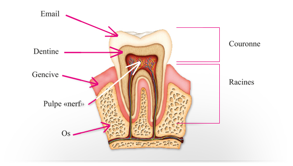
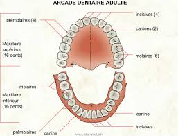
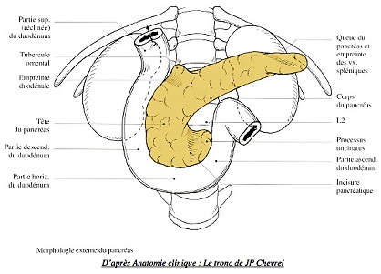
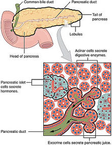

En haut : par la voete du palais et le
voile du palais qui la separent des fosses nasales.
En bas : par le plancher de la bouche.
Sur les cetes : par les deux joues.
Elle est
tapissee d'une muqueuse et contient les dents et la langue.
Elle s’ouvre en arriere sur le pharynx au niveau des piliers anterieurs
du voile du palais.
Les
dents
Definition
Les dents
sont des organes durs, dont le rele est de triturer les aliments
ingeres, afin de permettre une meilleure assimilation de ceux-ci.

Constitution des dents
Chaque
dent est composee de 4 substances :
La pulpe : partie centrale qui contient
les vaisseaux et les nerfs de la dent.
L'ivoire : partie peripherique
extremement dure.
L'email : situe au niveau de la
couronne, il recouvre l'ivoire.
Le cement : situe au niveau de la
racine, il recouvre l'ivoire.
Chaque
dent comporte 3 parties :
La racine : implantee dans les alveoles
dentaires des deux maxillaires.
La couronne : emerge de l'alveole.
Le collet : entre la racine et la
couronne.
Classification des dents
Il y a 4
sortes de dents :
Les incisives : couronne tranchante qui
coupent.
Les canines : couronne pointue qui
dechirent.
Les premolaires : couronne plate avec
deux tubercules qui ecrasent.
Les molaires : couronne plate avec
quatre tubercules qui broient.

Les deux dentitions
L'homme
fait deux dentitions successives :
La dentition de lait : 20
dents: temporaire et incomplete.
La dentition definitive : 32 dents :
complete et definitive.
La dentition de lait
La
dentition de lait comprend 20 dents qui apparaissent vers l'ege de 6
mois et se termine vers 3 ans :
8 incisives : 6e au 10e mois.
4 canines : 28e au 30e mois.
8 premolaires : 24e au 26e mois.
La dentition definitive
Vers 7
ans, les dents de laits tombent et sont remplacees par les dents
definitives, qui sont complete vers l'ege de 25 ans. Il y a 32 dents :
8 incisives : 6 e 10 ans.
4 canines : 10 e 12 ans.
8 premolaires : 9 e 12 ans.
12 molaires : 5 e 25 ans.
La
langue
La langue
est une masse musculaire annexee e la cavite buccale. Sa mobilite lui
permet la mastication et la deglutition des aliments ainsi que la
phonation lors du langage.
Elle est
composee d'un squelette, de 17 muscles et d'une muqueuse contenant les
recepteurs sensoriels de l'appareil de gustation.
Les
glandes salivaires
Il y a 3
glandes salivaires :
La parotide : situe en avant du conduit
auditif externe et de la mastoede.
La sous-maxillaire : situe sous la
langue.
La sublinguale : situe sous le
plancher de la langue, en avant des sous-maxillaires.
Le
pharynx
Le pharynx
est le carrefour
aero-digestif : oe se croisent les voies aeriennes et les
voies
digestives, on parle d'oropharynx.
Il fait
communiquer la bouche avec le l'œsophage.
L'œsophage
L'œsophage
est un conduit de 25 cm de long et large de 2 cm, qui fait communiquer
le pharynx en haut et l'estomac en bas.
L’estomac
L'estomac
est une poche digestive situee entre l’œsophage et l’intestin au niveau
de l’hypocondre gauche et de l’epigastre.
L'estomac
e la forme d'un J, il fait 25 cm de long, 10 e 12 cm de large, 8 e 9 cm
de profondeur, et e une capacite de 1,5 litres.
Configuration de l'estomac
Segment vertical :
Le cardia : orifice œsophagien.
La grosse tuberosite : portion renflee.
Le fundus ou le corps.
Segment horizontal :
L'antre : se dirige de gauche e droite
et se termine par un orifice, le pylore, qui fait communiquer l'estomac
avec le duodenum.
Bords de l'estomac :
La grande courbure : bord gauche.
La petite courbure : bord droit.
Reles de l’estomac
Stockage
des aliments.
Broyage
des aliments.
Pulverisation
des aliments.
Sterilisation
des aliments.
Structure de l'estomac
L'estomac est forme de trois couches :
Une couche sereuse : formee par le
peritoine.
Une couche musculaire : permet le
brassage des aliments.
Une couche muqueuse : siege de
nombreuses glandes qui secretent :
Le mucus qui protege la muqueuse.
Les constituants du suc gastrique :
enzymes, acide chlorhydrique.
La serotonine.
Video
de la physiologie de l'estomac : la digestion
L’intestin
grele
L'intestin
grele relie l'estomac (du pylore) au gros intestin (au colon). C'est la
partie la plus longue du tube digestif, il mesure 6,5 m de long sur 2,5
cm de diametre.
Configuration de l'intestin grele
L'intestin
grele comporte deux parties :
Le duodenum
: partie fixe.
Le jejuno-ileon
: partie mobile.
Le duodenum
Il fait
suite e l'estomac. Il commence par le pylore et se termine e l'angle
duodeno-jejunal.
Le
duodenum est le lieu d’abouchement des canaux excreteurs biliaires
(canal choledoque) et pancreatiques (canal de Santorini).
Le jejuno-ileon
Le
jejuno-ileon fait suite au duodenum. Il commence au niveau de l'angle
duodeno-jejunal et se termine e la valvule ileo-cecale, oe il s'abouche
dans le gros intestin.
Structure de l'intestin grele
L'intestin
grele est forme de trois couches :
Une couche sereuse : formee par le
peritoine.
Une couche musculaire.
Une couche muqueuse : siege des glandes
qui secretent le suc intestinal. Elle presente de nombreux replis dites
valvules conniventes et des millions de villosites intestinales qui
permet d'augmenter la surface d’echange entre les aliments et la
muqueuse.
Le
gros intestin
Le gros
intestin est la partie terminale du tube digestif. Il fait suite e
l'intestin grele et se termine par l'anus. Il mesure 1,5 m de
long et est large de 7 cm.
Configuration du gros intestin
Le gros
intestin est compose de differentes parties :
Le cecum
: portion initiale du gros intestin, c'est le lieu oe s'abouche l'ileon.
Le celon
ascendant : il fait suite au cecum. Il monte verticalement
sur le cete droit de l'abdomen jusque sous le foie et tourne e gauche
en formant l'angle colique droit ou angle hepatique.
Le celon
transverse : il fait suite au celon ascendant et commence
e l'angle hepatique. Il traverse de droite e gauche l'abdomen (du foie
e la rate) et redescend en formant l'angle colique gauche ou angle
splenique.
Le celon
descendant : il commence e l'angle splenique. Il descend
du cete gauche de l'abdomen jusqu'e la crete iliaque.
Le celon
pelvien ou celon
sigmoede : il fait suite au celon descendant. Il est
mobile, se decolle de la paroi laterale de l'abdomen, il a la forme
d'un S.
Le rectum
: c'est la
portion terminale du tube digestif. Il comprend deux parties :
L'ampoule
rectale : partie haute dilatee faisant suite au celon
sigmoede.
Le canal
anal : partie basse retrecie qui traverse le perinee.
Rele du gros intestin
Intervient apres la digestion et procede
e l’absorption des
nutriments.
Il doit assurer l’absorption de l’eau et
des electrolytes.
Le contenu intestinal sera epaissi puis
elimine par l’anus sous forme de selles semi solides, stockees dans le
rectum.
Structure du gros intestin
L'intestin
grele est forme de trois couches :
Une couche sereuse : formee par le
peritoine.
Une couche musculaire.
Une couche muqueuse.
Le
foie
Le foie
est la plus volumineuse des glandes annexes du tube digestif. Il est
situe sous la coupole diaphragmatique droite (hypocondre droit) et
deborde dans la region epigastrique e gauche.
Rele du foie
Le metabolisme
des glucides : stockage du glucose sous forme de glycogene.
Le metabolisme
des lipides : synthetisation des differents lipides puis
stockage dans le foie ou secretions dans le sang ou excretions dans la
bile.
Le metabolisme
des protides : synthetisation et excretion des differentes
proteines (albumine, facteurs de la coagulation).
Stockage
du fer.
Detoxication
: medicament, alcool.
Secretion
d'enzyme.
Secretion
de la bile.
Les
voies biliaires
Une des
fonctions du foie est la secretion de bile par les cellules hepatiques.
La bile est recueillie par les voies biliaires qui sont divises en deux
parties : intra- et extra-hepatiques.
Les voies
intra-hepatiques : canal
hepatique droit et canal
hepatique gauche. Recueillent la bile sur le lieu meme de
sa production au niveau des cellules hepatiques.
Les voies
extra-hepatiques : comprend deux parties :
La voie biliaire principale ou canal hepatique commun
: union du canal hepatique droit et du canal hepatique
gauche. Il s'unit au canal cystique (voie
excretrice de la vesicule) pour former le canal choledoque.
La voie
biliaire accessoire : c'est la vesicule biliaire. C'est le
reservoir oe s'accumule la bile dans l'intervalle des digestions.
Video de la vesicule
biliaire
e Docteur Richard
Martzolff Encyclopedie medicale Vulgaris
Le
pancreas
Le
pancreas est fixe e la partie posterieure de l'abdomen, en arriere de
l'estomac.

Rele du pancreas
Le
pancreas est Le
pancreas est une glande mixte car
elle possede une double action :
Un pancreas
exocrine qui contribue e la digestion en produisant du suc pancreatique :
Secretion electrolytique :
Bicarbonate.
Secretion enzymatique :
Amylase : enzyme
permettant le metabolisme de l'amidon et des dextrines en sucres reducteurs
assimilables.
Lipase : enzyme permettant le metabolisme des triglycerides.
Un pancreas
endocrine qui joue un rele important dans la regulation de la glycemie :
Insuline : hormone hypoglycemiante.
Glucagon : hormone hyperglycemiante.
La fonction endocrine est constituee
d'elots cellulaires, les elots de Langerhans. Il existe 3 types d'elots
:
Les cellules α qui secretent le glucagon.
Les cellules β qui secretent l'insuline.
Les cellules D qui secretent la
somatostatine.
Les cellules F qui secretent du
polypeptide pancreatique humain.

Les hormones pancreatiques
L'insuline
L'insuline
est secretee par les cellules β, elle a un rele essentiel dans le
metabolisme des glucides, des lipides et des protides.
Le rele
majeur de l'insuline est le metabolisme des glucides. L'insuline
abaisse le taux du sucre sanguin (glycemie), elle est hypoglycemiante
par differents mecanismes :
Elle favorise la penetration du glucose
e l'interieur des cellules.
Elle favorise le stockage du glucose
sous forme de glycogene.
Elle inhibe tous les processus de
degradation du glycogene en glucose.
Elle inhibe la fabrication de glucose e
partie des lipides ou des protides (neoglycogenese).
La
secretion d'insuline est declenchee par differents facteurs :
L'elevation de la glycemie.
L'action de certaines hormones.
Les facteurs nerveux.
Le glucagon
Le
glucagon est secrete par les cellules α, ses proprietes sont
antagonistes de l'insuline, il
est hyperglycemiant:
Il favorise la glycogenolyse : libere le
glucose e partir du glycogene.
Il favorise la fabrication de glucides e
partir d'acides amines.
La secretion de glucagon est contrelee
par :
Le taux plasmatique du glucose.
L'action de certaines hormones.
Le systeme nerveux.
La somatostatine
La
somatostatine est une hormone qui inhibe de nombreuses fonctions de la
digestion (suc gastrique).
Le
peritoine
Le
peritoine est une sereuse speciale qui enveloppe l'ensemble
des visceres digestifs.
Le peritoine est compose de deux feuillets :
Un feuillet parietal : tapisse la face
profonde de la paroi
abdominale.
Un feuillet visceral : enveloppe tous
les organes digestifs
abdominaux
Entre les deux feuillets se trouve la
cavite peritoneale.


 haut
de page
haut
de page